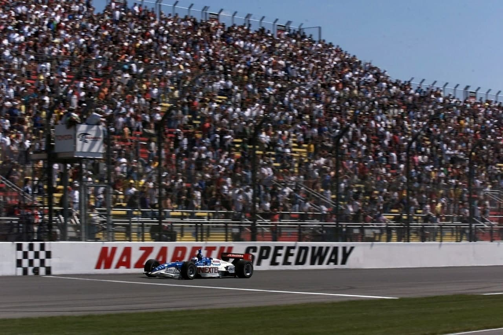
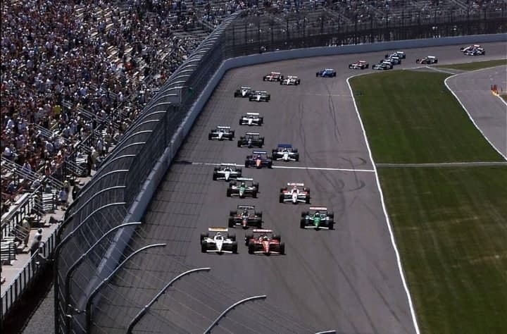
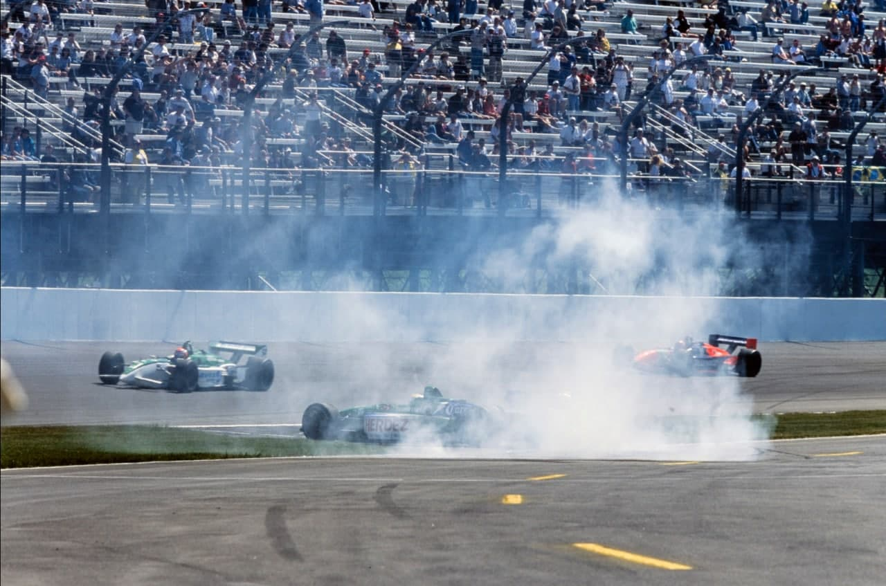
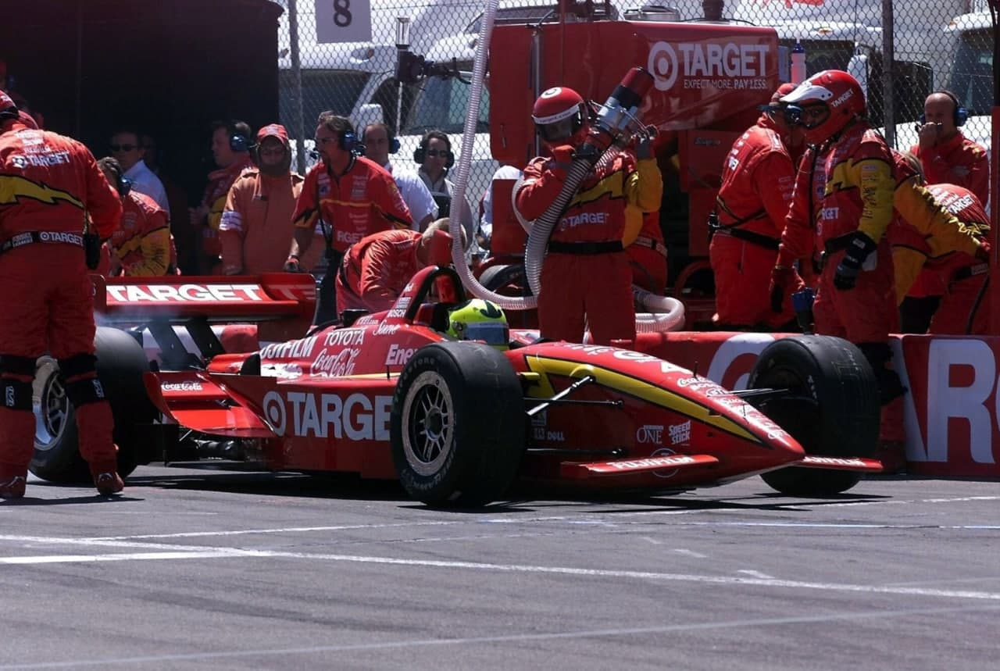
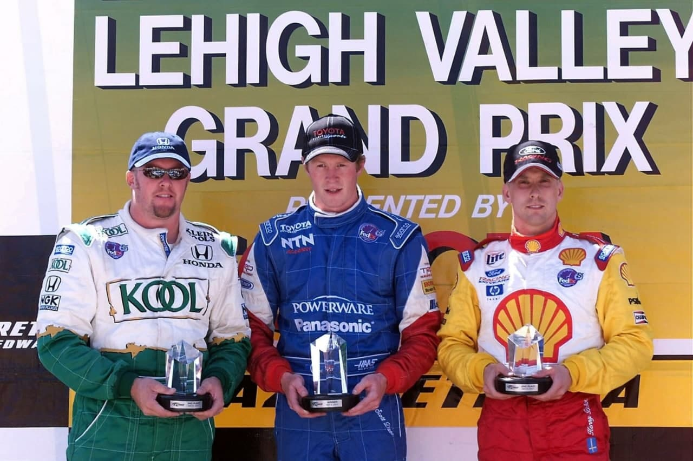

RECORDE DO GAROTO PRIDIGIO

Aos 20 anos, o neozelandês Scott Dixon tornou-se o mais jovem vencedor das categorias top do automobilismo.
Com o cancelamento da etapa de Forth Worth, no Texas, pelas brutais acelerações causadas pelo desenho da pista, a terceira prova do campeonato passou a ser a de Nazareth. A corrida no oval de Roger Penske, no quintal da família Andretti, deveria trazer de volta a tradição caipira americana e abrandara insatisfação de promotores e patrocinadores locais com a crescente internacionalizaçdo da categoria. Mas a prova virou um problema político para o presidente da Carr, Joe Heitzler, que a excluiu do calendário de 2002. Como se não bastasse, um forasteiro ganhou a corrida. O neozelandés Scott Dixon, campeão da Indy Lights, tornou-se o mais jovem vencedor das duas maiores categorias do automobilismo. Aos 20 anos, nove meses e 14 dias, superou o recorde da Cart, que era do canadense Greg Moore, vencedor em Milwaukee, em 1997, com 22 anos, um mês e dez dias. O recorde na F1 de outro neozelandes, Bruce McLaren, que venceu o GP dos EUA, em Sebring, em 1959, com 22 anos, tres meses e 14 dias. Dixon confirmou ser herdeiro da tradição da terra do kiwi. O país que já produziu um campeão mundial (Denny Hulme) e um dos grandes pilotos da Ferrari nos anos 60 (o azarado Chris Amon) agora tem uma jovem promessa. Dixon mostrou frieza de veterano ao resistir ao assédio final do sueco Kenny Brack. É bem verdade que o jovem rookie ganhou mais por mérito da estratégia da PacWest do que por velocidade. Neste quesito, Brack novamente deu um banho, Largou na primeira fila, superou o pole Bruno Junqueira e liderou 125 voltas. Depois do seu pit-stop, voltou em nono e fez ultrapassagens sensacionais. Mas os acidentes provocaram 51 voltas em bandeira amarela, alterando o ritmo e a tática de corrida.

Quem largou atrás aproveitou para alterar janela de pit-stops. Foi o caso de Dixon, o 23º do grid, e de Tony Kanaan, que assumiu a ponta após a parada de Brack. Kanaan liderou por 64 voltas, mas teve de fazer um splash & go na 189ª. Dixon ganhou a liderança e foi até o final das 225 voltas sem reabastecer, pois enchera o tanque na 116. As rodadas de Takagi e Jourdain Jr e o acidente entre Gil de Ferran e Alex Tagliani ajudaram o neozelandês a poupar combustível. Nas últimas 10 voltas, Dixon monitorou o consumo pelo rádio, até que a equipe o liberou para usar a mistura mais rica. "Meu carro estava excelente nas saídas de curva e não permiti que Brack pegasse o vácuo”, contou o vencedor, prestando homenagem ao parceiro Maurício Gugelmin. O brasileiro não correu porque um dos filhos gêmeos, Giuliano, de seis anos, morreu, vítima de problemas respiratórios. "Maurício é uma ótima pessoa, me ajudou muito nesse início e está passando por um momento delicado. A vitória é dele também", declarou Dixon. Gugelmin estava em recuperação de um acidente no Texas, quando bateu duas vezes no muro, de frente, com impacto de 66.2 Gs, e de traseira, a incríveis 113.1 Gs. Ele escapou graças ao dispositivo Hans, que prende o pescoço e a cabeça do piloto ao seu corpo e ao cinto. Presidente da associação dos pilotos, Maurício lutou pelo cancelamento da corrida. Numa consulta a especialista da Nasa, o médico da Cart, Steve Olvey, concluiu que, para resistir às acelerações laterais e verticais nas curvas, com 24 graus de inclinação, a 370 km/h, os pilotos precisariam usar um macacão pressurizado, como os dos pilotos de caças. Caso contrário, em 30 voltas, começariam a ter desmaios e confusão mental.

Kenny Brack, que obtivera a pole, foi um dos únicos contrários ao cancelamento. Queria correr e bateu boca com Michael Andretti e Christian Fittipaldi no briefing. Na verdade, o sueco estava na fissura de conquistar a primeira vitória. Ele não disfarçou a frustração após perder a corrida em Nazareth por 366 milésimos. “Não sei o que preciso fazer a mais para vencer", lamentou."Meu carro era pelo menos meio segundo por volta mais rápido do que o de Scott, mas, nesta pista é quase impossível passar." Brack provou que disputaria o título. Mas a liderança do campeonato ficou com Paul Tracy, terceiro colocado na prova, que igualou-se a Cristiano da Matta, com 40 pontos. O mineiro chegou só em 10°, prejudicado pela tática conservadora da Newman-Haas. Christian Fittipaldi terminou em quinto, mas reclamou da lentidão no seu primeiro pit-stop. Ele foi surpreendido pela tietagem de uma fã. Ao passar na estrada, voltando do autodromo na sexta-feira, Christian viu uma foto sua em tamanho natural e vários posters seus na janela de uma casa, Curioso, estacionou o carro, bateu na porta, mas não havia ninguém. Ele deixou um bilhete com seu e-mail e recebeu uma mensagem de Jessica Heckler, que disse que esperava por aquele momento a vida toda. Heckler foi ao autódromo buscar um autógrafo, convidou Christian para passar em sua casa, mas ele teve de declinar, porque tinha que ir à festa de Mario Andretti...

Prejudicado por ter o rádio quebrado, o pole Bruno Junqueira se atrapalhou nos pit-stops e bou em sétimo. Mas ganhou moral na Ganassi. "Foi uma boa estréia em oval". comentou."Aproveitei a experiência da F-3000, onde a gente tinha pouco tempo para classificar, para me adaptar mais rápido à pista, mas cometi uns erros de novato. Foi bom pelo aprendizado." Hélio Castroneves e Roberto Moreno pontuaram, em 11º e 12º. Kanaan foi 16° e Max Wilson, 17º. Luiz Garcia Jr. rompeu com a Dale Coyne e não correu.
